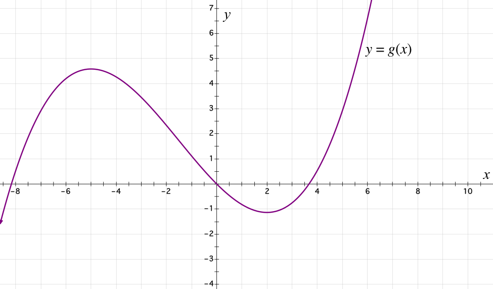

Before watching the videos, think about and answer these questions to the best of
your ability. Your answer will always be recorded as correct, regardless of your
answer choice.
The graph of the function is shown below.

Approximate the value of .
For how many values of in the interval does ? (Just enter the number of values.)
.